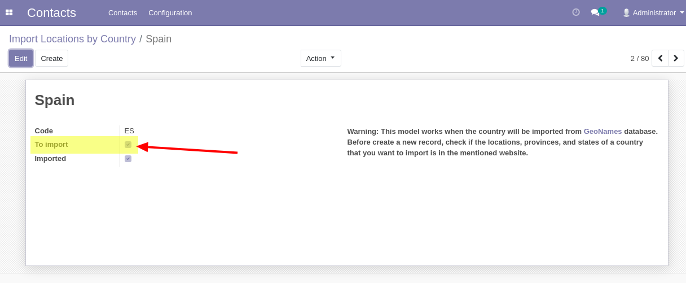

Load locations of a country
This app allows load to database the location data of a defined country from the GeoNames.
It makes a new field on contact address that allows an auto fill of: zip, city, country, and state.
For more information about locations you can visit the offical website GeoNames.
To import locations of a country, you can do it in: Contacts -> Configuration -> Import Locations by Country

